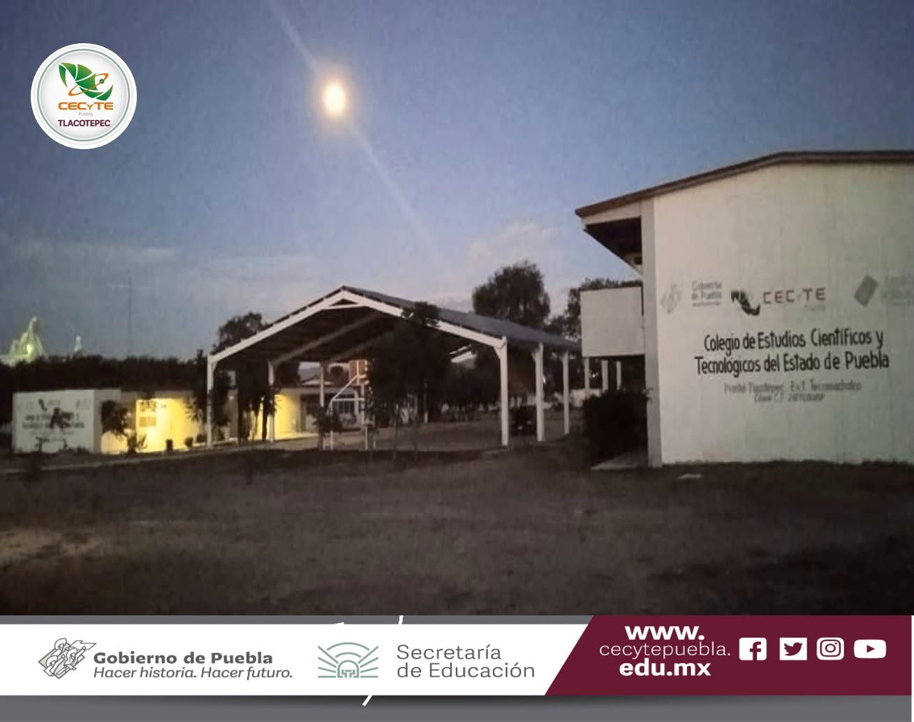

El Colegio de Estudios Científicos y Tecnológicos del Estado de Puebla (CECyTE) es una institución de educación media superior que ofrece bachillerato tecnológico. Su objetivo es formar estudiantes con conocimientos científicos, tecnológicos y humanísticos, preparándolos para continuar sus estudios universitarios o incorporarse al mundo laboral. Además, promueve valores, responsabilidad, innovación y el desarrollo de competencias profesionales a través de sus diferentes especialidades.